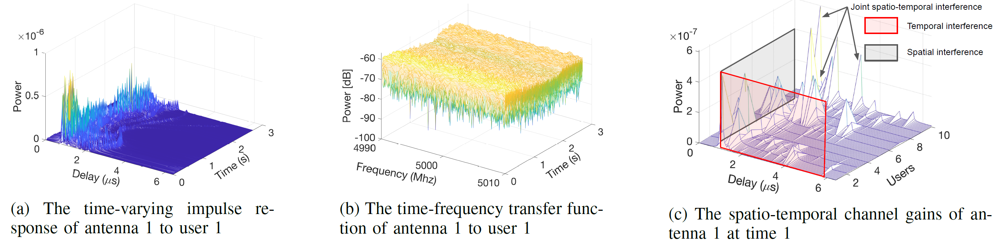
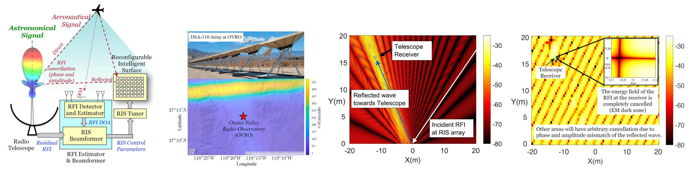

Zhibin Zou
Zhibin Zou is an PhD student in the Department of Electrical and Computer Engineering at University at Albany, SUNY, where he is advised by Prof. Aveek Dutta since 2021. He received his Master’s and Bachelor's degrees from Xidian University, China. His research focuses on wireless communications, precoding and channel characterization with an emphasis on waveform design for non-stationary channels using ML/DL techniques. He is a recipient of the Best Paper Award within the Wireless Communication track in IEEE ICC 2022.
Email / Google Scholar / Linkedin / CV
Recent Projects
NSF CAREER, advised by Prof. Aveek Dutta, 2021-Present | Project Page
This project aims to generalizes the architecture of a Deep Learning (DL) based wireless transceiver that will consistently operate with low error rate in all types of wireless channels, but especially outperform the state of the art in future xG channels. My contributions of this work is summarized as: 1) derived a High-order Generalized Mercer's Theorem (HOGMT) for non-stationary channels decomposition, by which the non-stationary channels can be decomposed into independently fading sub-channels, 2) proposed a unified charaterization method for non-stationary channels, and 3) proposed a HOGMT based spatio-temporal precoding to cancel spatial, temporal and jointly spatio-temporal interference. Currently, I am working on the robust algorithm design for HOGMT-precoding.
NSF SWIFT, co-advised by Prof. Aveek Dutta and Prof. Dola Saha, 2022-Present | Project Page
The objectives of this project are to accurately estimate the RFI incident at the telescope and to configure the RIS so the reflected signal arriving at the telescope receiver precisely cancels the incident RFI. My contributions are: 1) Assisted in preparing the project proposal, 2) proposed a phase and engergy solution for RIS elements to cancel RFI at telescope by reflecting the incident RFI, and 3) gave an error boundary for given localization error.
NSF SWIFT, co-advised by Prof. Aveek Dutta and Prof. Dola Saha, 2022-Present | Project Page
This project focuses on active interference cancellation at the telescope supported by active bidirectional collaboration between the telescope and neighboring cellular networks. I am currently working on extracting astronomic signal from composite signal at telescope under the RFI by Bussbang theorem.
NSF Collaborative Research: RI: Medium, advised by Prof. Weifu Wang, 2019-2021 | Project Page

This project explores how flexible robots can be designed to move and join together to form larger structures, such as temporary antennas, tent supports, bridges, or tunnel reinforcements. My contributions are: 1) defined the point-edge contact model for peg-in-hole problem, and 2) proposed an optimization for error-tolerating peg and socket joints with respect to insertion and stability.
Awards and Honors
{kind=link}
Publications
The publications are mainly on three domains: wireless communication, robotics and target tracking.
Journals:
- Waveforms for xG Non-stationary Channels
Z ZOU, A Dutta
IEEE Communications Magazine (Under Review) | paper - Joint Spatio-Temporal Precoding for Practical Non-Stationary Wireless Channels
Z ZOU, M Careem, A Dutta, N Thawdar
IEEE Transactions on Communications | paper - Labeled box-particle CPHD filter for multiple extended targets tracking
Z ZOU, L Song, X Cheng
Journal of Systems Engineering and Electronics | paper - Group target tracking algorithm based on labeled box particle probability hypothesis density
X Cheng, L Song, H Ji, Z ZOU
Systems Engineering and Electronics (in Chinese) | paper
Conferences:
- Low complexity Dirty Paper Coding for MU-MIMO channels
Z ZOU, A Dutta
IEEE Global Communications Conference (GLOBECOM) 2023 (Under Review) | paper - Mutidimensional Eigenwaves Multiplexing Modulation for Non-stationary Channels
Z ZOU, A Dutta
IEEE Global Communications Conference (GLOBECOM) 2023 (Under Review) | paper - SCISRS: Signal Cancellation using Intelligent Surfaces for Radio Astronomy Services
Z ZOU, X Wei, D Saha, A Dutta, G Hellbourg
IEEE Global Communications Conference (GLOBECOM) 2022 | paper - Unified Characterization and Precoding for Non-Stationary Channels
Z ZOU, M Careem, A Dutta, N Thawdar
IEEE International Conference on Communications (ICC) 2022 [Best Paper Award] | paper - Multiple group target tracking with evolving networks and labeled box particle PHD filter
X Cheng, L Song Z Zou
Chinese Control And Decision Conference (CCDC) 2018 | paper - Labeled box-particle PHD filter for multi-target tracking
Z Zou, L Song, X Cheng
IEEE International Conference on Computer and Communications (ICCC) 2017 | paper
Patents:
- Passive Box-particle PHD multi-target tracking based on TDOA
L Song, Y Pan, Z Zou, H Ceng, P Yang, J Chai, F Song, F Wang
CN Patent, CN108981707B (Granted) | patent - A evaluation for the multple group and extended target ellipse shape estimation
L Song, H Cent, Y Pan, P Yang, Z Zou, F Wang, F Song, J Chai
CN Patent, CN109683150A (Filed) | patent - Front vehicles distance measuring based on deep learning
L Song, P Yang, H Ceng, Y Pan, Z Zou, F Wang, F Song, J Chai
CN Patent, CN109509223A (Filed) | patent